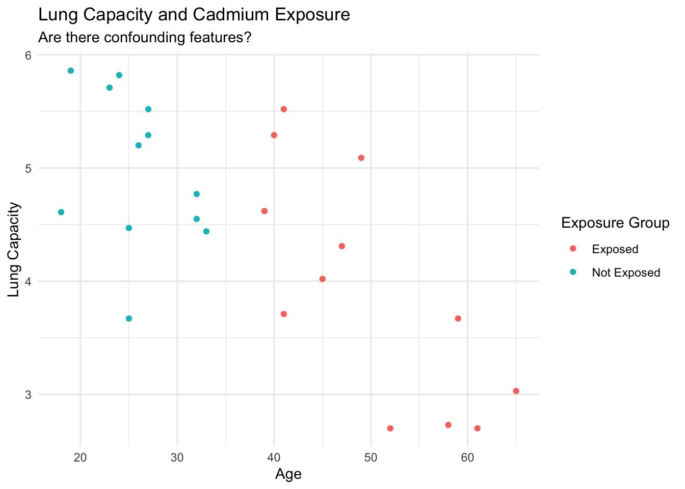

library(ISwR)
library(tidyverse)
library(janitor)Working with Samples of Data
Setup
We’re going to use data that is supplied by the book Introduction to Statistics with R, written by Peter Daalgard. Here is a link to the book: [link]. This is an old-ish book, so we don’t use it as a core resource for the course, but, well, t-tests haven’t changed much in the last decade, although idiomatic writing in the language has.
To start with, you have to install this package to make it available to you. This is one of the neat parts of the R ecosystem, that there are many community contributed packages that can be imported and used.
theme_set(theme_minimal())Question 1
Ok, here’s a weird dataset that is included in the ISwR package, the react dataset. The documentation describes this data as:
The numeric vector
reactcontains differences between two nurses’ determinations of 334 tuberculin reaction sizes.
Well, ok then! Once you have loaded the package, you can access this data by referring to the object.
react [1] -9 -6 -5 -5 -5 -4 -4 -4 -4 -4 -4 -4 -4 -4 -4 -4 -4 -4 -4 -4 -4 -4 -4 -4 -4
[26] -4 -3 -3 -3 -3 -3 -3 -3 -3 -3 -3 -3 -3 -3 -3 -3 -3 -3 -3 -3 -3 -3 -3 -3 -3
[51] -3 -3 -3 -3 -3 -2 -2 -2 -2 -2 -2 -2 -2 -2 -2 -2 -2 -2 -2 -2 -2 -2 -2 -2 -2
[76] -2 -2 -2 -2 -2 -2 -2 -2 -2 -2 -2 -2 -2 -2 -2 -2 -2 -2 -2 -2 -2 -2 -2 -2 -2
[101] -2 -2 -2 -2 -1 -1 -1 -1 -1 -1 -1 -1 -1 -1 -1 -1 -1 -1 -1 -1 -1 -1 -1 -1 -1
[126] -1 -1 -1 -1 -1 -1 -1 -1 -1 -1 -1 -1 -1 -1 -1 -1 -1 -1 -1 -1 -1 -1 -1 -1 -1
[151] -1 -1 -1 -1 -1 -1 -1 -1 -1 -1 -1 -1 -1 -1 -1 -1 -1 -1 -1 -1 -1 -1 -1 -1 -1
[176] -1 -1 -1 -1 -1 -1 -1 -1 -1 -1 -1 -1 -1 -1 -1 -1 -1 -1 -1 -1 -1 -1 -1 0 0
[201] 0 0 0 0 0 0 0 0 0 0 0 0 0 0 0 0 0 0 0 0 0 0 0 0 0
[226] 0 0 0 0 0 0 0 0 0 0 0 0 0 0 0 0 0 0 0 0 0 0 0 0 0
[251] 0 0 0 0 0 0 0 0 0 1 1 1 1 1 1 1 1 1 1 1 1 1 1 1 1
[276] 1 1 1 1 1 1 1 1 1 1 1 1 1 1 1 1 1 1 1 1 1 1 1 1 1
[301] 2 2 2 2 2 2 2 2 2 2 2 2 2 2 2 2 2 2 2 2 2 2 2 2 2
[326] 3 3 3 3 3 4 4 5 8To begin, produce a plot of this data that you think is informative of the distribution of the data.
ggplot() +
aes(x=react) +
geom_histogram(bins=10)
- Does this data look to be “reasonably well distributed”? What does that mean to you in the context and how are you evaluating this?
- Does this distribution differ significantly from zero? Conduct a t-test to evaluate this
I don’t, and I suspect that you don’t either, have enough context to know what a “big difference” would be. So, for this question, let’s skip the very important task of describing this in context.
Question 2
Okay, from one weird dataset to another!
The dataset vitcap is described in the following way:
The
vitcapdata frame has 24 rows and 3 columns. It contains data on vital capacity for workers in the cadmium industry. It is a subset of thevitcap2data set.
The description goes on to describe the three variables that are included in the data:
group: a numeric vector where group codes are as follows:1: The individual was exposed for more than 10 years.3: The individual was not exposed for more than 10 years.
age: a numeric vector, which is the individuals age in yearsvital.capacity: a numeric vector of “vital capacity” which is a measure of lung volume.
Cleaning Up This Data
Here’s the thing, since I’m writing this, I get to be opinionated. And, although these are aesthetic preferences for how data should look and be named, they’re good preferences, and ones that you could do well to learn from. That’s the kind of mandate that I get as the instructor for the course!
- Variable names: dots (
.) in variable names are a bad idea; it is going to confuse the heck out of you working between R and python. If you’re going to use underscores_to separate spaces, then it is too much gymnastics to use those underscores and also capital letters. So preference 1: prefer lower-case variable names separated with underscores.- You can create these either by setting the “names” attribute of a data.frame object by hand, or you can use a nice function that is in the janitor package:
janitor::clean_names(). - Having a variable called
groupis a bad idea; this has some analytic meaning, and I confuse whether this is a variable name, or a method that I’m using on data.
- You can create these either by setting the “names” attribute of a data.frame object by hand, or you can use a nice function that is in the janitor package:
- If your data is going to split the population into groups, don’t name those groups with a numeric label that might be misconstrued as having some actual numeric meaning. In this data, switch the
groupvariable to something more expressive.- You can make this change using the
dplyrverbcase_when. - If you haven’t used this before, you can ask for the help documentation for the verb by calling for
?case_whenin the console.
- You can make this change using the
- While you’re at it, the name of the object that holds your data should also be something that people can anticipate. When I see
vitcapI don’t know what the heck this is – it could be a function, a data-object, or… I don’t know, anything else.- There is a construct in R that data can be stored in the object
d. This is easy to type, and there’s an understanding within the group of people who are writing analysis in the language that this is likely to hold data. If you don’t have another thing to call your data,dis just fine. - Otherwise, make it clear that your object contains data. For this, you could call this like
lung_capacityor something else. It isn’t typical to call the data object something likelung_capacity_data, probably because this leads to a lot of typing.
- There is a construct in R that data can be stored in the object
- You can achieve all of these at the same time, by chaining things together, for example using either the
magrittrpipe that is included in thetidyverseuniverse of packages, or by using the native pipe that is included in modern R.- The magrittr pipe is
%>%and is kind of baroque looking. - The base pipe is
|>and is a little cleaner, but can be harder to type. I have this mapped to a keyboard shortcut for myself in Rstudio.
- The magrittr pipe is
If I were going to write this all together, I might write it in the following form:
lung_capacity <- vitcap |>
clean_names() |>
rename(lung_capacity = vital_capacity) |>
mutate(
exposure_group = case_when(
group == 1 ~ "Exposed",
group == 3 ~ "Not Exposed"
)
)
head(lung_capacity) group age lung_capacity exposure_group
1 1 39 4.62 Exposed
2 1 40 5.29 Exposed
3 1 41 5.52 Exposed
4 1 41 3.71 Exposed
5 1 45 4.02 Exposed
6 1 49 5.09 ExposedAnd then, I can use the lung_capacity object to do the work that I want to do.
Plot
Start by making a plot that you think is informative about the lung capacity of the 24 people in this data. There are three variables that you need to show, so I would consider putting the outcome on the y-axis, the age on the x-axis, and the group into a color mapping.
This will let the reader see all three axes at once.
lung_capacity |>
ggplot() +
aes(x = age, y = lung_capacity, color = exposure_group) +
geom_point() +
labs(
title = "Lung Capacity and Cadmium Exposure",
subtitle = "Are there confounding features?",
color = "Exposure Group",
x = "Age",
y = "Lung Capacity"
)
Conduct a t-test for whether the lung capacity is different between those who have been exposed to cadmium for more than 10 years, compared to those who have been exposed for fewer than 10 years. Use the “formula interface” which has the following form:
t.test(left-hand side ~ right-hand side, data = d)
Where the left-hand side is the “outcome” that you’re interesting in modeling using “explanatory” features on the right hand side.
What is the 95% confidence interval for this difference?
Store your results into an object called capacity_test_ . After you have estimated this quantity, you can inspect the elements of the test object by calling for str(capacity_test_) (which is for structure). If you issue the command capacity_test_ at the console, the default response for this object it to print a pretty version of the test results.
Notice that when you call for str(capacity_test_) you get a list of 10 things, including the statistic, the parameter the p.value and so on.
capacity_test_ <- t.test(lung_capacity ~ group, data = lung_capacity)
str(capacity_test_)List of 10
$ statistic : Named num -2.92
..- attr(*, "names")= chr "t"
$ parameter : Named num 19
..- attr(*, "names")= chr "df"
$ p.value : num 0.00872
$ conf.int : num [1:2] -1.79 -0.296
..- attr(*, "conf.level")= num 0.95
$ estimate : Named num [1:2] 3.95 4.99
..- attr(*, "names")= chr [1:2] "mean in group 1" "mean in group 3"
$ null.value : Named num 0
..- attr(*, "names")= chr "difference in means between group 1 and group 3"
$ stderr : num 0.357
$ alternative: chr "two.sided"
$ method : chr "Welch Two Sample t-test"
$ data.name : chr "lung_capacity by group"
- attr(*, "class")= chr "htest"capacity_test_
Welch Two Sample t-test
data: lung_capacity by group
t = -2.9228, df = 19.019, p-value = 0.008724
alternative hypothesis: true difference in means between group 1 and group 3 is not equal to 0
95 percent confidence interval:
-1.7904211 -0.2962456
sample estimates:
mean in group 1 mean in group 3
3.949167 4.992500